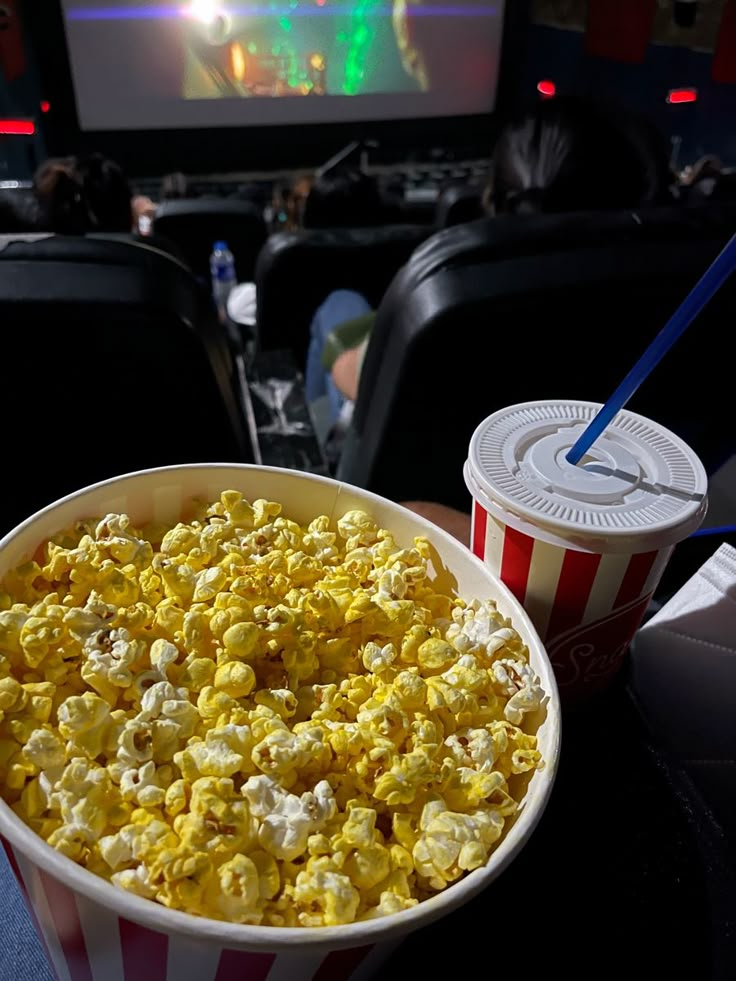

cinema é o marco do entreterimento
 Quero conhecer!O que é o cinema?
O a historia do cinema A história do cinema começa em 1895 com a invenção do Cinematógrafo pelos irmãos Lumière, que projetaram o primeiro filme público pago, "A Chegada de um Trem na Estação", em Paris. O desenvolvimento inicial foi marcado pelo cinema mudo, seguindo-se a revolução sonora e a introdução da cor, que transformaram a arte e seu formato narrativo. Eventos-chave incluem a criação do Cinetoscópio por Thomas Edison, o desenvolvimento de técnicas como o close-up por James Williamson e a introdução do cinema digital no final do século XX. Origens e o Cinema Mudo (Final do Século XIX - Década de 1920) Precursores: O conceito de "imagem em movimento" é anterior ao cinema, com inventos como a lanterna mágica (século XVII) e o Praxinoscópio de Charles Émile Reynaud (1877). Invents Chave: Thomas Edison criou o Cinetoscópio, que permitia visualização individual, e os irmãos Lumière desenvolveram o Cinematógrafo, capaz de gravar e projetar. A Primeira Projeção: A exibição pública dos irmãos Lumière em Paris em 1895 é considerada um marco do início oficial do cinema. Primeiras Narrativas: Georges Méliès e Alice Guy-Blaché foram pioneiros em usar recursos como magia e ilusionismo para criar efeitos visuais. A Era do Som e da Cor (Década de 1920 - Década de 1950) Revolução Sonora: O filme "The Lights of New York" (1928) foi o primeiro filme totalmente falado, e a tecnologia sonora foi rapidamente adotada, transformando a experiência cinematográfica. Popularização da Cor: Processos como o Technicolor expandiram a paleta visual, e filmes como "O Mágico de Oz" (1939) tornaram-se ícones da era da cor. Evolução Técnica e Novos Formatos (Final do Século XX - Presente) Avanços na Narrativa: A edição e os efeitos especiais, como o efeito Schufftan (1928), permitiram maior complexidade e custos menores de produção de cenários. Transição para o Digital: No final dos anos 90, o cinema digital começou a substituir os rolos de filme, facilitando a gravação, a edição, e eliminando os custos de transporte. Novos Movimentos: O desenvolvimento de movimentos como o Cinema Novo no Brasil (década de 1960) e o cinema marginal (década de 1970) mostraram a diversidade de estilos e temáticas. História do Cinema: da sua origem aos dias de hoje - AIC 6 de out. de 2023 Academia Internacional de Cinema A Origem do Cinema - InC | Instituto de Cinema | Cursos de Cinema e Atuação Instituto de Cinema História do cinema: origem, evolução, resumo - Brasil Escola Eugen Schufftan foi um cineasta que desenvolveu o chamado efeito Schufftan, técnica que revolucionou os efeitos especiais no cinem... Brasil Escola Mostrar todos